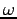

Next:
Contents
Contents
User's Guide for Quantum-ESPRESSO
(version 3.2)
Contents
1 Introduction
1.1 Codes
1.2 People
1.3 Contacts
1.4 Terms of use
2 Installation
2.1 Configure
2.1.1 Libraries
2.1.1.1 BLAS and LAPACK
2.1.1.2 FFT
2.1.1.3 Other libraries
2.1.2 Manual configuration
2.1.2.1 Note for HP PA-RISC users:
2.1.2.2 Note for MS-Windows users:
2.2 Compile
2.3 Run examples
2.4 Installation Issues
2.4.0.1 All machines
2.4.0.2 IBM AIX
2.4.0.3 SGI machines with IRIX/MIPS compiler
2.4.0.4 Linux Alphas with Compaq compiler
2.4.0.5 Linux PC
2.4.0.6 Linux PCs with g95 compiler
2.4.0.7 Linux PCs with Portland Group compiler (pgf90)
2.4.0.8 Linux PCs with Pathscale compiler
2.4.0.9 Linux PCs (Pentium) with Intel compiler (ifort, formerly ifc)
2.4.0.10 ifort v.9
2.4.0.11 ifort v.8
2.4.0.12 ifc v.7
2.4.0.13 MKL
2.4.0.14 Fun with precompiled libraries
2.4.0.15 AMD CPUs, Intel Itanium
2.4.0.16 Linux PC clusters with MPI
2.4.0.17 Mac OS X
2.4.0.18 T3E
3 Running on parallel machines
4 Pseudopotentials
5 Using PWscf
5.1 Electronic and ionic structure calculations
5.1.1 Input data
5.1.2 Typical cases
5.2 Phonon calculations
5.2.1 Calculation of interatomic force constants in real space
5.2.2 Calculation of electron-phonon interaction coefficients
5.3 Post-processing
6 Using CP
7 Performance issues (PWscf)
7.1 CPU time requirements
7.2 Memory requirements
7.3 File space requirements
7.4 Parallelization issues
8 Troubleshooting (PWscf)
8.0.0.1
pw.x
yields a message like ``error while loading shared libraries: ... cannot open shared object file'' and does not start.
8.0.0.2 errors in examples with parallel execution
8.0.0.3
pw.x
prints the first few lines and then nothing happens (parallel execution).
8.0.0.4
pw.x
stops with error in reading.
8.0.0.5
pw.x
mumbles something like ``cannot recover'' or ``error reading recover file''.
8.0.0.6
pw.x
stops with ``inconsistent DFT'' error.
8.0.0.7
pw.x
stops with error in cdiaghg or rdiaghg.
8.0.0.8
pw.x
crashes with ``floating invalid'' or ``floating divide by zero''.
8.0.0.9
pw.x
crashes with no error message at all.
8.0.0.10
pw.x
crashes with ``segmentation fault'' or similarly obscure messages.
8.0.0.11
pw.x
works for simple systems, but not for large systems or whenever more RAM is needed.
8.0.0.12
pw.x
crashes in parallel execution with an obscure message related to MPI errors.
8.0.0.13
pw.x
runs but nothing happens.
8.0.0.14
pw.x
yields weird results.
8.0.0.15
pw.x
stops with error message ``the system is metallic, specify occupations''.
8.0.0.16
pw.x
stops with ``internal error: cannot braket Ef'' in
efermig
.
8.0.0.17
pw.x
yields ``internal error: cannot braket Ef'' message in
efermit
, then stops because ``charge is incorrect''.
8.0.0.18
pw.x
yields ``internal error: cannot braket Ef'' message in
efermit
but doesn't stop.
8.0.0.19 in parallel execution,
pw.x
stops complaining that ``some processors have no planes'' or ``smooth planes'' or some other strange error.
8.0.0.20 the FFT grids in
pw.x
are machine-dependent.
8.0.0.21 ``warning: symmetry operation # N not allowed''.
8.0.0.22
pw.x
doesn't find all the symmetries you expected.
8.0.0.23 I don't get the same results in different machines!
8.0.0.24 the CPU time is time-dependent!
8.0.0.25 ``warning : N eigenvectors not converged ...''
8.0.0.26 ``warning : negative or imaginary charge...'', or ``...core charge ...'', or ``npt with rhoup<
0...'' or ''rhodw<
0...''
8.0.0.27 self-consistency is slow or does not converge.
8.0.0.28 structural optimization is slow or does not converge.
8.0.0.29
pw.x
stops during variable-cell optimization in
checkallsym
with ``non orthogonal operation'' error.
8.0.0.30 Why are codes in PP/ complaining that they do not find some files?
8.0.0.31
ph.x
stops with ``error reading file''.
8.0.0.32
ph.x
mumbles something like ``cannot recover'' or ``error reading recover file''.
8.0.0.33
ph.x
says ``occupation numbers probably wrong'' and continues; or ``phonon + tetrahedra not implemented'' and stops
8.0.0.34
ph.x
does not yield acoustic modes with  = 0
at
q
= 0
.
8.0.0.35
ph.x
yields really lousy phonons, with bad or negative frequencies or wrong symmetries or gross ASR violations.
8.0.0.36 ``Wrong degeneracy'' error in star_q.
9 Frequently Asked Questions
9.1 Compilation/Installation
9.2 In general
About this document ...
Paolo Giannozzi 2008-05-14